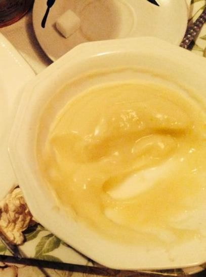

Cereal Production
Maize, millet, sorghum and rice grown at commercial scale — the backbone of our feed, food and processing lines.
Overview
Grains at Commercial Scale
Cereals are our largest crop enterprise. From rainfed uplands to irrigated fadama, we produce grains with certified seed, mechanised planting and combine harvesting. Cleaned and dried in our own facilities, our grains meet the moisture and purity standards demanded by millers and feed millers.
- Certified seed and precision planting
- Combine harvesters and on-site drying
- Graded supply for millers and feed manufacturers
Our Grains
Cereals We Grow
Maize
White and yellow maize, food and feed grade.
Sorghum
Drought-tolerant grains for food and brewing.
Millet
Pearl millet for traditional food markets.
Rice
Irrigated paddy for local milling.
Millers & Feed Manufacturers
Contract volumes of graded grain, delivered on schedule.